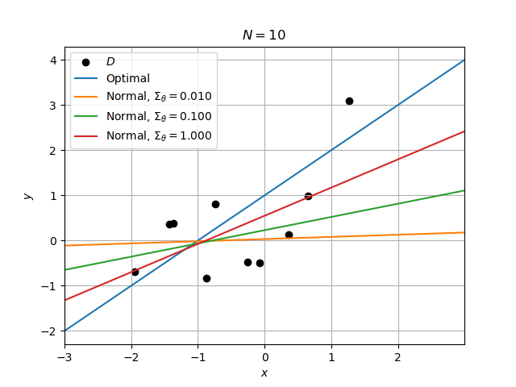

User Guide#
Installation#
To use Statistical Learning, first install the local package using pip:
pip install <path>
Note that <path> should point to the top-level directory containing setup.cfg.
Quickstart#
A basic example of model creation, learner definition, and performance assessment is shown below. The model
attribute defines a jointly Normal distribution where the expected value of y conditioned on x is
characterized by a polynomial function.
Two different predictors are instantiated. First, the opt_predictor uses knowledge of the model to
determine the optimal predict function. Second, a learning regressor is formulated using a Bayesian data
model norm_model; this object implements a Normal distribution norm_model.prior to characterize
uncertainty about the true model weights.
Training and testing data are randomly generated using the model sample method and each predictor is assessed
using its evaluate method. Once the learning norm_predictor is fit to the data, its
squared-error loss is reduced.
from stats_learn import random, bayes
from stats_learn.predictors import ModelRegressor, BayesRegressor
model = random.models.NormalLinear(weights=[1, 1])
# Predictors
opt_predictor = ModelRegressor(model, name='Optimal')
norm_model = bayes.models.NormalLinear(prior_mean=[0, 0], prior_cov=1)
norm_predictor = BayesRegressor(norm_model, name='Normal')
# Results
seed = 12345
n_train = 10
n_test = 20
d = model.sample(n_train + n_test, rng=seed)
d_train, d_test = d[:n_train], d[n_train:]
loss_min = opt_predictor.evaluate(d_test)
print(f"Minimum loss = {loss_min:.3f}")
loss_prior = norm_predictor.evaluate(d_test) # use the prior distribution
print(f"Untrained learner loss = {loss_prior:.3f}")
norm_predictor.fit(d_train) # fit the posterior distribution
loss_fit = norm_predictor.evaluate(d_test)
print(f"Trained learner loss = {loss_fit:.3f}")
Output:
Minimum loss = 0.549
Prior learner loss = 3.413
Trained learner loss = 0.951
The code below can be executed after the previous snippet. The data_assess function provides replication of the
functionality above, including a loss table and a graphic showing how the predict functions fit the training
data. The model_assess function performs Monte Carlo approximation of the expected loss by repeatedly
generating and evaluating on new datasets, enabling statistically meaningful evaluation. Observe that it can be used
for both visualization of both the prediction statistics and of the average loss.
from stats_learn import results
predictors = [opt_predictor, norm_predictor]
params = [None, {'prior_cov': [.01, .1, 1]}]
# Sample regressor realizations
results.data_assess(predictors, d_train, d_test, params, verbose=True, plot_fit=True)
# Prediction mean/variance
results.model_assess(predictors, model, params, n_train, n_test, n_mc=10, stats=('mean', 'std'), verbose=True,
plot_stats=True, print_loss=True, rng=seed)
# Squared-Error vs. training data volume
n_train = range(0, 100, 5)
results.model_assess(predictors, model, params, n_train, n_test, n_mc=10, verbose=True, plot_loss=True, rng=seed)
Output:
| | 10 |
|---------------------------------|-------|
| Optimal | 0.549 |
| Normal, $\Sigma_\theta = 0.010$ | 3.171 |
| Normal, $\Sigma_\theta = 0.100$ | 2.034 |
| Normal, $\Sigma_\theta = 1.000$ | 0.951 |
| | 10 |
|---------------------------------|-------|
| Optimal | 1.005 |
| Normal, $\Sigma_\theta = 0.010$ | 2.689 |
| Normal, $\Sigma_\theta = 0.100$ | 1.629 |
| Normal, $\Sigma_\theta = 1.000$ | 1.205 |